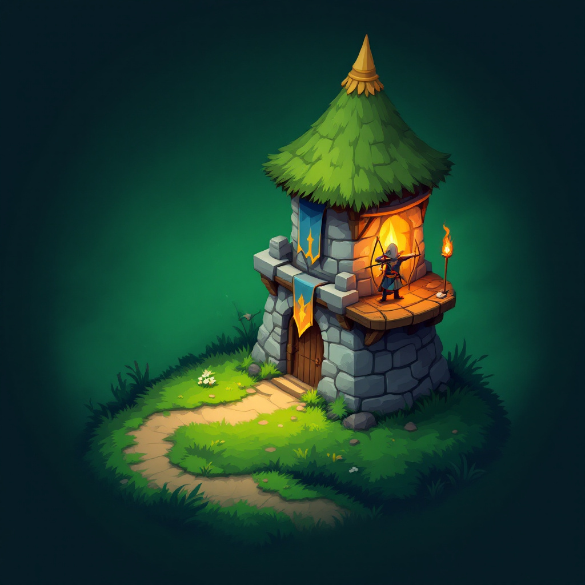

Moss PassTower Defense
Privacy Policy
Last updated: September 27, 2026
Moss Pass does not collect personal data and never sells or shares data with advertisers.
- No account or sign-in, no advertising, no tracking across apps or websites.
- Anonymous gameplay statistics. To improve game balance, the game sends a few anonymous events to TelemetryDeck, a privacy-focused analytics service in the EU: when a wave starts, when a game is won or lost, the wave number, difficulty, language, app version and how many towers of each type were built. Each install gets a random identifier that is hashed before sending; it is not linked to your name, email, Apple ID, advertising ID or location. No IP addresses are stored by TelemetryDeck.
- The game is fully playable offline; if there is no connection, no statistics are sent.
- Your best wave and chosen difficulty are saved only on your device and are removed when you delete the app.
Children: the game collects no personal data from anyone, including children.
Questions: github.com/betulsimsek/moss-pass/issues. If this policy changes, the new version will be posted on this page with a new date.
Gizlilik Politikası
Son güncelleme: 27 Eylül 2026
Moss Pass kişisel veri toplamaz; hiçbir veriyi satmaz veya reklamcılarla paylaşmaz.
- Hesap veya giriş yok, reklam yok, uygulamalar ve siteler arası takip yok.
- Anonim oyun istatistikleri. Oyun dengesini iyileştirmek için oyun, AB merkezli ve gizlilik odaklı bir analitik hizmeti olan TelemetryDeck'e birkaç anonim olay gönderir: dalganın başlaması, oyunun kazanılması veya kaybedilmesi, dalga numarası, zorluk, dil, uygulama sürümü ve her kule tipinden kaç tane kurulduğu. Her kurulum için rastgele bir kimlik üretilir ve gönderilmeden önce özetlenir (hash); adın, e-postan, Apple kimliğin, reklam kimliğin veya konumunla ilişkilendirilmez. TelemetryDeck IP adreslerini saklamaz.
- Oyun internetsiz de oynanır; bağlantı yoksa istatistik gönderilmez.
- En iyi dalga sonucun ve seçtiğin zorluk yalnızca cihazında saklanır, uygulamayı silince kaybolur.
Çocuklar: Oyun çocuklar dahil hiç kimseden kişisel veri toplamaz.
Sorular için: github.com/betulsimsek/moss-pass/issues. Politika değişirse yeni sürüm bu sayfada yeni tarihle yayınlanır.